8 - Generative AI for Computer Vision
After this lecture you should be able to:
- Explain how generative modeling differs from classification: sampling from a distribution of plausible outputs instead of predicting a label (one-to-many vs. many-to-one mapping)
- Describe the role of random inputs and latent variables in enabling diverse outputs from a single condition
- Distinguish unconditional and conditional generation, and recognize common conditional generation tasks
- Describe the common goal of generative models, \(p_{\theta}(\mathbf{x}) \approx p_{\text{data}}(\mathbf{x})\), and explain maximum likelihood as one principle to reach it
- Define fidelity and coverage, and explain the trade-offs between model properties: sampling efficiency, fidelity and coverage, latent-space structure, and likelihood computation
- Select appropriate evaluation methods for generative models depending on the task and available ground truth, and explain why fidelity and coverage must be assessed separately (precision and recall vs. FID)
- Generative models sample from a distribution of plausible outputs, \(p_{\theta}(\mathbf{x} \mid \mathbf{y})\) (one-to-many), instead of predicting a label, \(p_{\theta}(\mathbf{y} \mid \mathbf{x})\) (many-to-one). Random inputs \(\mathbf{z}\) provide the diversity.
- In conditional generation, \(\hat{\mathbf{x}} = g_{\theta}(\mathbf{z}, \mathbf{c})\), the condition \(\mathbf{c}\) (class label, text prompt, image, mask, reference image, …) provides control. Models create, edit, complete, enhance, translate, or animate visual data.
- The common goal is \(p_{\theta}(\mathbf{x}) \approx p_{\text{data}}(\mathbf{x})\), for example via maximum likelihood. A good model needs both fidelity (realistic samples) and coverage (the full variety of the data).
- Model families trade off sampling efficiency, fidelity and coverage, latent-space structure, and likelihood computation; no family excels at all of them.
- Evaluation starts from the question: FID summarizes fidelity and coverage in a single number, precision and recall measure them separately. Prompt following, faithfulness to the input, and usefulness require human or task-specific evaluation.
- A plausible output is not necessarily a faithful one, which is critical for super-resolution, medical, and scientific images.
1 Motivation
Generative AI has had a profound effect on many aspects of our society. Particularly, the release of ChatGPT (see OpenAI 2022) kicked off a new era of AI applications, focused on generating natural language. Recently, the quality of image generative models has made significant leaps: Nowadays, it is difficult to distinguish between real and synthetic images (see Figure 1).
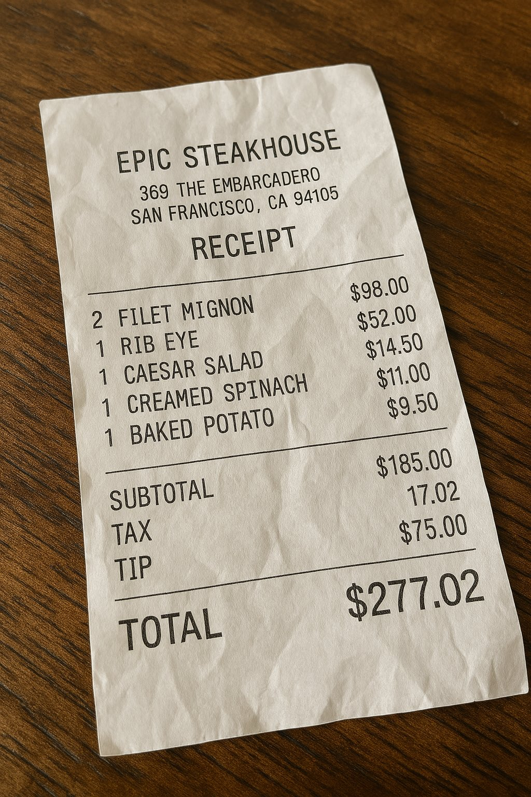
Arguably, the most impressive generative models are multimodal: they understand text and images and allow precise control of the generation process using natural language. Models such as GPT Image 2 (Source), Nano Banana 2 (Source) and FLUX.2 (Source) edit existing images by following instructions (see Figure 2). Notably, the requested aspect is changed while the rest of the scene is preserved.
Modern models can also use one or several reference images as a condition. They generate new scenes while preserving the identity of an object, a person, or a style (see Figure 3).
Commercial applications of generative AI include the virtual staging of rooms with objects (furniture). This helps realtors present their properties in a more appealing and “real” way (see Figure 4).
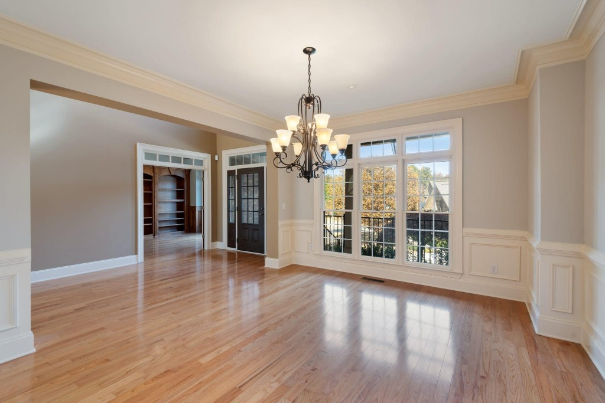
AI-generated images are prevalent in commercials and ads. Restuarants or fast food businesses increasingly use generative AI to promote their menus (Lieferando Examples), since it is cheaper and quicker than hiring a food photographer (Source). The results often look uncanny (see Figure 5). Humans are particularly sensitive to food that does not look real, and food images depend on texture, repetition, and the interfaces between materials, which older and free models handle poorly: they may, for example, spread the pattern of sesame seeds over an entire dish. Moreover, even a convincing image does not show the dish that is actually served: it is plausible, but not faithful. We will return to this distinction in Section 6.4. Image editing also works the other way around: Figure 5 (b) shows a real burger that was allegedly edited to look undercooked, presumably to claim a refund from a delivery service. The origin of this example is unconfirmed, but it shows how easily a photo used as evidence can be manipulated.
Video generation has advanced rapidly as well. Models such as Google’s Veo 3.1 generate short clips including audio and can be conditioned on reference images (Source).
Not all generative models create images from scratch. Image super resolution is a task where generative models up-sample images spatially and enrich detail (see Figure 6). Again, the generated details are plausible, but they are not necessarily the details of the true high-resolution image.
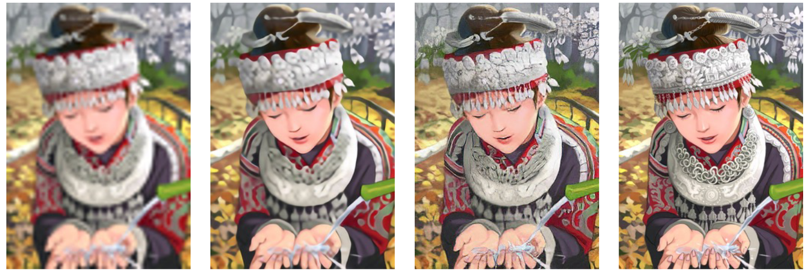
Similar ideas are used in real-time graphics. NVIDIA DLSS renders a game at a lower resolution and upscales each frame with a neural network, which is cheaper than rendering natively at high resolution (see Figure 7). Recent versions even synthesize entire additional frames between rendered ones (Source).
Generative AI is used in many domains nowadays. Figure 8 shows an application where MRI images are converted to synthetic CT scans. CT scans expose the body to radiation and should thus be avoided if possible. However, CT scans show bone structure much better than MRIs. This application helps get the best of both worlds.
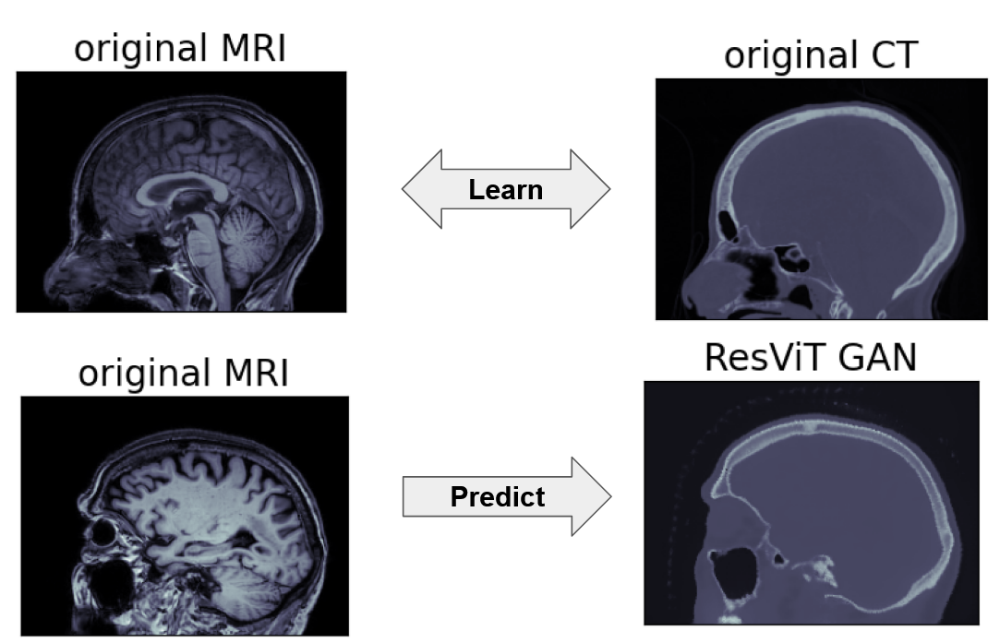
Creating highly creative and diverse images has been enabled by recent advances of models trained on internet-scale datasets. Different companies, such as Midjourney have built businesses around this capability to make it easy for users to generate images (see Figure 9).
Companies such as Canva have integrated generative models into their design tools, making it easy for users to generate images and use them in their designs (see Figure 10).
Image editing through conversation became widely accessible in 2025. Figure 11 shows two images that were generated in turn with GPT-4o image generation, following user instructions about how to change the first image.
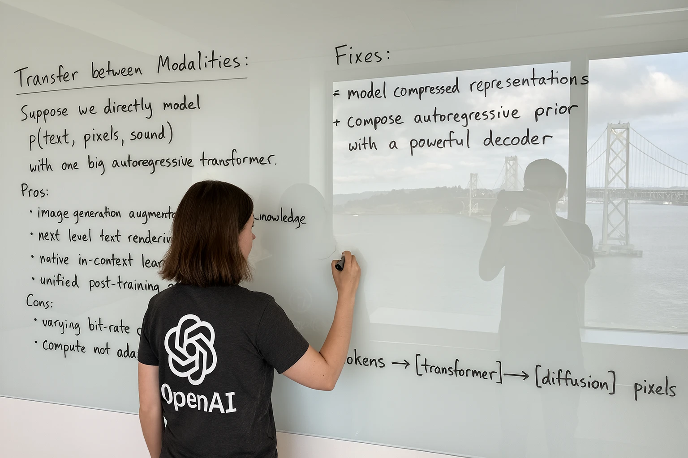
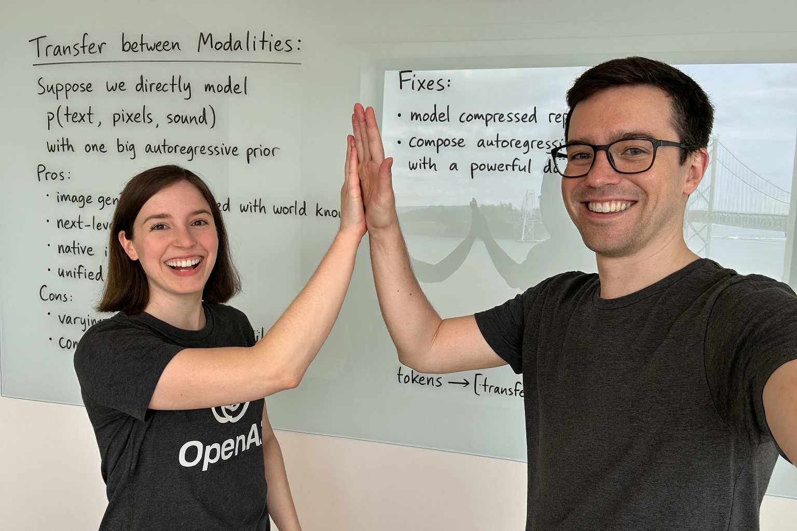
AI-generated content in advertisements seems particularly prevalent. Suspected AI-generated content is shown in Figure 12.
🤔 What do you think? Are these ads AI-generated?
Midjourney, a company known for its image generation service, also released a model that animates images into short videos (see Figure 13).
NVIDIA DLSS combines several neural networks, each addressing a different part of the rendering pipeline:
- Super Resolution: The game renders at a lower resolution, and a network upscales each frame using information from previous frames. Interestingly, up-scaling with a neural network is cheaper than rendering natively at high resolution (see Figure 7).
- Frame Generation: A network synthesizes entire additional frames between rendered ones, using motion vectors and optical flow. Since DLSS 4.5, up to five frames can be generated per rendered frame (Source).
- Ray Reconstruction: Ray tracing is expensive, so only a limited number of rays is computed, resulting in a noisy image. A network replaces hand-tuned denoisers and predicts the missing pixels (see Figure 14, Source).
All three produce pixels that were never rendered, but to different degrees: super resolution and ray reconstruction refine a rendered frame, while frame generation synthesizes entire frames for which no rendered counterpart exists.
Generative models are also used to create synthetic training data for predictive models, such as for solar flare prediction (see Figure 15).
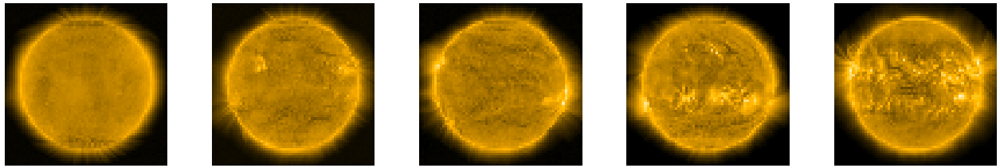
Generative AI has come a long way. Almost nothing illustrates that better than the quality of generated images of human faces (see Figure 16).
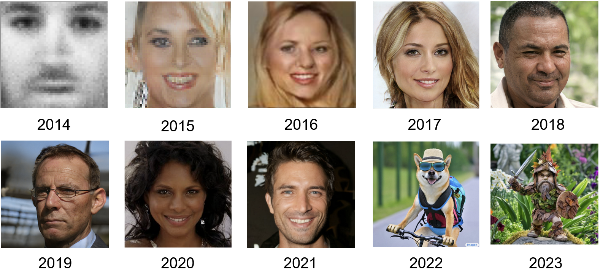
Over time, the dominant model families have shifted (see Table 1). We will discuss these families in more detail later.
| Period | Development | Examples |
|---|---|---|
| 2014–2019 | GANs: from blurry, low-resolution images to photorealistic faces | Goodfellow et al. (2014), Karras et al. (2019) |
| 2020–2022 | Diffusion models; latent diffusion makes high-resolution text-to-image generation widely accessible | Ho et al. (2020), Rombach et al. (2022), Saharia et al. (2022) |
| 2023–2024 | Better prompt following; transformer backbones trained with flow-based objectives (rectified flow) | Betker et al. (2023), Esser et al. (2024) |
| 2025–2026 | Native multimodal models; instruction-based editing with one or several reference images | GPT-4o image generation, FLUX.1 Kontext (Labs et al. 2025), Nano Banana 2, FLUX.2, GPT Image 2 |
Notably, no model family has completely replaced another. Image generation in GPT-4o, for example, is autoregressive (Source), and latent diffusion models train their autoencoder with an adversarial loss, a key idea of GANs (Rombach et al. 2022).
How do such models work, and what does it mean for a model to generate data? In the following, we develop the core ideas step by step, starting from a task we already know well: classification.
2 What Is Generative Modelling?
Let’s contrast generative modelling with a classification task (see Figure 17). As a simplified mental picture, let’s denote \(f(\mathbf{x}) = \mathbf{y}\) for a classifier, and \(g(\mathbf{y}) = \mathbf{x}\) for a generative model.
In classification the model has as input an image \(\mathbf{x}^{(i)}\) and models a probability distribution over all classes \(\hat{\mathbf{y}}^{(i)}\) which ideally assigns a high probability to the true label \(\mathbf{y}^{(i)}\).
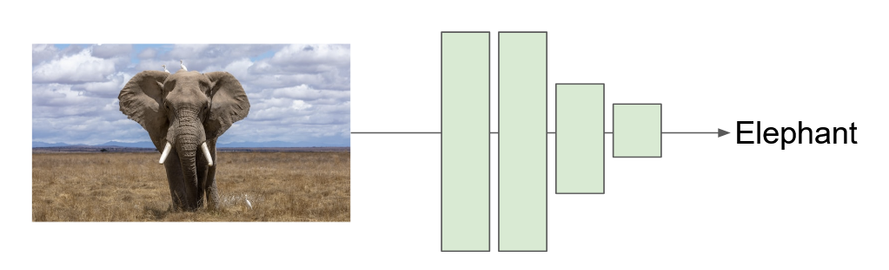
At first glance, generative modelling seems to reverse this process: The input can be a label \(\mathbf{y}\), such as a class label, and the output is an image \(\mathbf{x}^{(i)}\), see Figure 18.
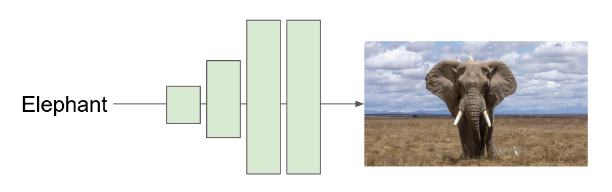
Looking at the input and the output of Figure 18. What could be a problem?
Click for result
If the input (in this case) to the generative model is a label, such as elephant, how can the model generate not just that one elephant?
An important distinction between a classifier and a generative model is:
- \(f(\mathbf{x})\) is a many-to-one mapping. Many inputs (e.g. images of elephants) should be associated with the same label (e.g the elephant label).
- \(g(\mathbf{y})\) is a one-to-many mapping. One label (e.g. elephant) should be associated with many outputs (e.g. images of elephants).
Generative modelling is therefore not simply the inverse of classification. More precisely, both tasks can be described by conditional probability distributions, but over different variables:
\[ \begin{aligned} \text{classification:} \quad & p_{\theta}(\mathbf{y} \mid \mathbf{x}) \\ \text{generation:} \quad & p_{\theta}(\mathbf{x} \mid \mathbf{y}) \end{aligned} \tag{1}\]
A classifier models a distribution over a handful of classes, and we are usually interested in its most probable class. A conditional generative model has to represent a distribution over all plausible images of an elephant, an extremely high-dimensional space. Moreover, we do not want the single most probable image: we want to sample from the distribution, such that each call produces a different, plausible elephant. Notably, simply inverting a trained classifier does not work: optimizing an input image to maximize a classifier’s confidence for a class typically yields unrecognizable patterns rather than realistic images (Nguyen et al. 2015). Figure 19 illustrates the classification side: one input image is mapped to one distribution over a few classes.
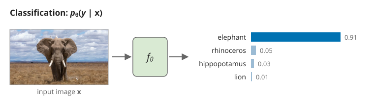
Since neural networks consist of deterministic operations (such as matrix multiplications and additions) we need a way to transform \(g()\) to a stochastic function. Only then is it possible to generate different elephants and not always the same image (see Figure 20).
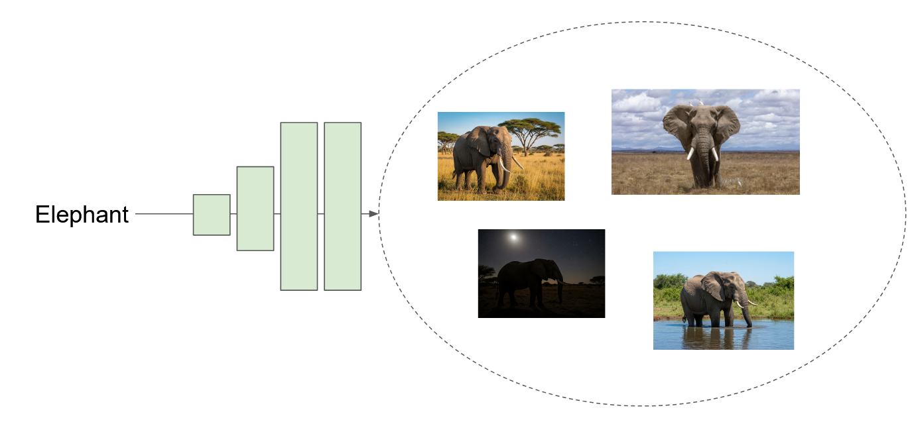
One way to achieve this is to give the generative model an additional random input \(\mathbf{z} \sim p(\mathbf{z})\) and to generate samples using \(g_{\theta}(\mathbf{z}, \mathbf{y})\). Typically, \(p(\mathbf{z})\) is a simple distribution that is easy to sample from, such as a standard Gaussian: \(\mathbf{z} \sim \mathcal{N}(\mathbf{0}, \mathbf{I})\). Each new draw of \(\mathbf{z}\) yields a new output.
Figure 21 shows the resulting conditional generator: it combines the same condition \(\mathbf{c}\) with different random inputs \(\mathbf{z}^{(1)}, \mathbf{z}^{(2)}, \mathbf{z}^{(3)}\) and produces a different, plausible image for each of them. In contrast to the classifier in Figure 19, the output is not a distribution over a few classes but a sample from a distribution over images.
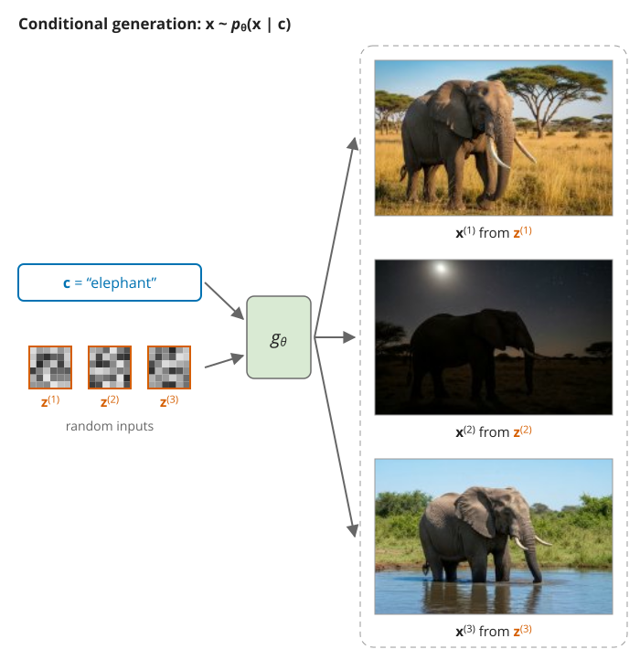
One way to think about \(\mathbf{z}\) is as a latent variable: it is not observed, but it captures variation in the data that is not specified by the input. In our elephant example, the condition \(\mathbf{y}\) specifies that the image should show an elephant, while \(\mathbf{z}\) might define aspects of the animal (pose, size, number of individuals) and of the scene (time of day, surroundings). This is an intuition rather than a guarantee: the model is free to use \(\mathbf{z}\) in whatever way helps it to produce diverse outputs.
A single random vector that is mapped to an image is only one way to make a generator stochastic. Depending on the model family, randomness enters in different ways:
- Single latent vector: GANs and VAE decoders map one sample \(\mathbf{z}\) to an output in a single forward pass.
- Initial noise image: Diffusion and flow matching models start from a noise image of the same size as the output (or its compressed representation) and transform it gradually. Many diffusion samplers additionally inject fresh noise at every step.
- Sequential sampling: Autoregressive models predict a probability distribution over the next pixel or token, sample from it, and repeat. There is no single explicit latent vector.
We will see these mechanisms in more detail in the next lecture.
Consider the dataset shown in Figure 22: What could be latent variables for this dataset?
Click for result
Each output is defined by its width and height. Therefore, we have two (unobserved) latent variables.
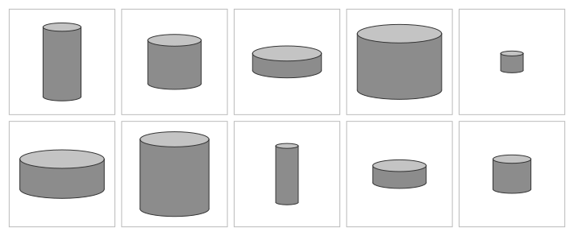
Figure 23 shows a plausible latent space and the mapping \(g\) from a point in that space to a sample.
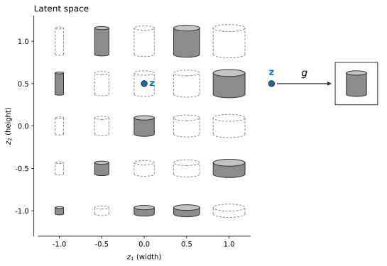
This example is deliberately simple: the latent space is two-dimensional and each axis has a clear meaning. Latent spaces of real image generators are high-dimensional, and their individual dimensions usually do not correspond to human-interpretable properties such as pose or time of day.
3 Controlling Generation
Generative models differ in what information is given to them. Sometimes we want the model to generate freely, for example any plausible face, room, or product image. This is called unconditional generation: the random input is the only input of the model, and different samples of \(\mathbf{z}\) produce different plausible outputs.
\[ \hat{\mathbf{x}} = g_{\theta}(\mathbf{z}) \]
More often, especially in computer vision applications, we want the model to generate under constraints, such as a class label, a text prompt, an input image, a mask, or a reference image. In conditional generation, the model additionally receives this conditioning information \(\mathbf{c}\):
\[ \hat{\mathbf{x}} = g_{\theta}(\mathbf{z}, \mathbf{c}) \]
The class label \(\mathbf{y}\) of our elephant example is one such condition. In general, the condition \(\mathbf{c}\) specifies what should be generated, preserved, completed, enhanced, or changed. In probabilistic terms, an unconditional model learns to sample from \(p_{\theta}(\mathbf{x})\), while a conditional model learns to sample from \(p_{\theta}(\mathbf{x} \mid \mathbf{c})\).
In the following, we use \(\mathbf{z}\) as a shorthand for all random inputs of the model, whichever of the mechanisms discussed above is used. We often write \(g()\) to simplify notation.
Looking at Figure 24, what do you notice? The images were generated with ChatGPT’s image generation model.
As a result, generative computer vision is much broader than text-to-image generation: models can create, edit, complete, enhance, translate, or animate visual data (see Table 2).
| Setting | Condition \(\mathbf{c}\) | Typical task | Example |
|---|---|---|---|
| Unconditional generation | none | image generation | generate a random face, room, or product image |
| Class-conditional generation | class label | class-guided image generation | generate an elephant |
| Text-to-image generation | text prompt | prompt-guided image generation | “a red chair in a modern living room” |
| Image editing | image + instruction | modify an existing image | change season, style, material, or lighting (Figure 2) |
| Inpainting / outpainting | image + mask or extended canvas | complete or extend an image | remove an object, fill a missing region, expand the background beyond the image borders |
| Super-resolution / enhancement | low-resolution or degraded image | enhance visual detail | upscaling, denoising, sharpening (Figure 6) |
| Image translation | source image | translate to another domain | MRI to CT (Figure 8), sketch to photo, day to night |
| Layout-controlled generation | segmentation map, depth map, pose, or edges | generate with structural control | create an image following a given layout |
| Reference-based generation | reference image | preserve identity, product, or style | generate new views of the same product (Figure 3) |
| Video generation | prompt, image, or frame sequence | video | short clips, object motion, scene animation (Figure 13) |
The stochastic variable \(\mathbf{z}\) provides diversity, while the condition \(\mathbf{c}\) provides control.
| Task | What is the condition? |
|---|---|
| super-resolution | ? |
| inpainting | ? |
| MRI → CT | ? |
| text-to-image | ? |
| product image generation from reference | ? |
Click for possible answer
- low-resolution image
- image + mask
- source MRI image
- text prompt
- reference product image
4 How Generative Models Learn
How do we train a model to produce data that looks like real data? We assume that the training images \(\mathbf{x}^{(1)}, \dots, \mathbf{x}^{(N)}\) are samples from an unknown data distribution \(p_{\text{data}}(\mathbf{x})\). The goal of a generative model is to learn a model distribution \(p_{\theta}(\mathbf{x})\) that approximates it:
\[ p_{\theta}(\mathbf{x}) \approx p_{\text{data}}(\mathbf{x}) \tag{2}\]
Some models define \(p_{\theta}\) explicitly as a formula that can be evaluated. Others define it only implicitly, through their sampling procedure.
Images take (approximately) continuous values, so \(p_{\text{data}}\) and \(p_{\theta}\) are probability density functions over the image space \(\mathcal{X}\), for example \(\mathcal{X} = \mathbb{R}^{3 \times H \times W}\). A density \(p: \mathcal{X} \to [0, \infty)\) must integrate to one:
\[ \int_{\mathcal{X}} p(\mathbf{x}) \, d\mathbf{x} = 1 \]
In contrast to a probability mass (e.g. the class probabilities of a classifier), a density value is not a probability: it can be larger than 1, and the probability of observing one exact image is zero. Only regions of \(\mathcal{X}\) have a probability. Intuitively, a high density at \(\mathbf{x}\) means that images in the neighbourhood of \(\mathbf{x}\) are likely.
What does such a density look like for images? Since images are high-dimensional, we cannot plot \(p_{\text{data}}\) directly. Figure 25 illustrates the idea in 1D: the x axis is a path through image space, from a real 0 to a real 7. Near the two modes, the images are plausible digits. Between the modes, they are blends that are neither a 0 nor a 7: such images lie in a region of low density, and a good generative model should rarely produce them.
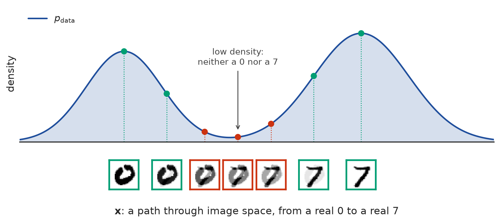
What does Equation 2 mean in practice? First, generated samples should be realistic: they should lie in regions where \(p_{\text{data}}\) has a high density. Figure 26 illustrates the principle with the path from Figure 25: Models should aim to synthesize samples which are probable under the true distribution.
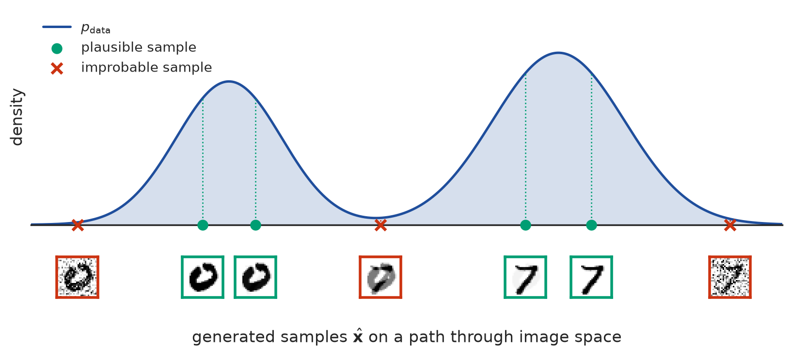
Realistic samples alone, however, are not enough. A model that always produces the same, most typical image, generates only realistic samples, but it has not learned the distribution. Generated samples should also cover all regions where real data occurs, in the right proportions. A good generative model represents the full distribution, not merely individual high-density samples.
- Fidelity: generated samples lie in regions where \(p_{\text{data}}\) has a high density, i.e. they look like real data.
- Coverage: generated samples occur in all regions where \(p_{\text{data}}\) has a high density, in the right proportions, i.e. the model generates the full variety of the real data.
A good generative model needs both. In Section 6.3.2, we measure them with two metrics: precision (fidelity) and recall (coverage).
Figure 27 illustrates the two aspects with a simple 1D example.
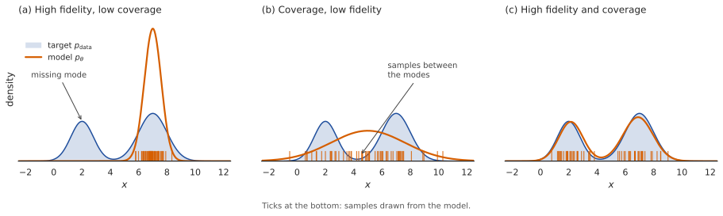
4.1 Maximum Likelihood
How can we make \(p_{\theta}\) similar to \(p_{\text{data}}\) if we only have samples from \(p_{\text{data}}\)? A classic approach is maximum likelihood estimation: we choose the parameters \(\theta\) such that the training data is as likely as possible under the model:
\[ \theta^{*} = \arg\max_{\theta} \frac{1}{N} \sum_{i=1}^{N} \log p_{\theta}(\mathbf{x}^{(i)}) \tag{3}\]
It can be shown that, for a large number of training samples, this is equivalent to minimizing the Kullback-Leibler divergence \(D_{\mathrm{KL}}(p_{\text{data}} \,\|\, p_{\theta})\), a measure of the difference between the two distributions. Maximum likelihood strongly penalizes a model that assigns a low density to any real training example, which encourages coverage. It requires, however, that \(p_{\theta}(\mathbf{x})\) can be evaluated (or at least bounded) for a given image.
Figure 28 illustrates how the modelled distribution improves by increasing the likelihood of observing the training data.
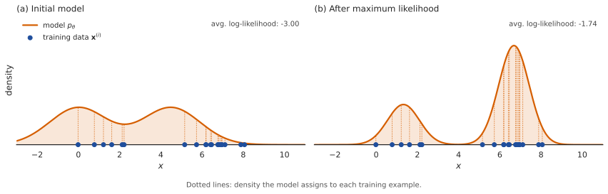
Note: Evaluating a density and sampling from it are different capabilities. A model that can evaluate \(p_{\theta}(\mathbf{x})\) is useful on its own, for example to detect outliers, but it still needs a mechanism to generate samples. Conversely, some models can generate samples but cannot evaluate \(p_{\theta}(\mathbf{x})\).
4.2 Interactive Demo: Learning a 1D Distribution
The following demo lets you play the role of a generative model. The target distribution (blue) is fixed. You choose the parameters of a generator, draw samples, and compare them with the target. The button Fit by maximum likelihood fits the generator to 1,000 training samples drawn from the target. The displayed fidelity and coverage are simple versions of precision and recall, two metrics we will meet again in Section 6.3.2.
- Can a single Gaussian reproduce both modes? Try to reach high fidelity and high coverage.
- With a single Gaussian, press Fit by maximum likelihood. Where does the fitted Gaussian lie, and why?
- Choose the preset Mode collapse. Every generated sample looks realistic. Is this a good generative model?
- Increase the number of samples to 10,000. What changes, and what does not?
- Switch to the mixture of two Gaussians and fit it again. Compare its log-likelihood with that of the target itself.
Click for possible answers
- No. A single Gaussian has only one mode: if it sits on one mode, the other is missing (low coverage); if it is broad enough to cover both, many samples fall between the modes (low fidelity).
- Between the two modes, with a large standard deviation (mean ≈ 5, standard deviation ≈ 2.6). Maximum likelihood strongly penalizes training samples with a low density, so the fitted Gaussian must cover both modes. Coverage is high, fidelity is low.
- No. Realistic individual samples do not make a good generative model: the left mode is never generated. The very low log-likelihood shows this, since the model assigns almost no density to a large part of the real data.
- The histogram approaches the generator’s density, and fidelity fluctuates less between seeds. The generator itself does not change: more samples cannot compensate for a model that is too simple to represent the target.
- The mixture recovers both modes: fidelity and coverage are close to the maximum of about 95%, and its log-likelihood is close to that of the target. Model capacity, not the number of samples, was the limitation.
The demo illustrates two typical failures. A model that is too simple cannot represent the target: it either misses a mode (low coverage) or generates many samples between the modes (low fidelity). A mode-collapsed model generates realistic samples, but only of part of the data (low coverage). In Section 6, we detect the same failures for images, whose distributions we cannot plot, with precision and recall.
5 Properties and Trade-offs
Maximum likelihood is an important principle, but it is not the only one. Generative model families differ in how they are trained and in how they produce samples; we discuss them in the next lecture (Generative Model Families). These families make different trade-offs with respect to the following properties. Unfortunately, no single model family excels at all of them, although modern models narrow some of the gaps.
5.1 Efficient Sampling
Applications such as interactive tools, real-time graphics, or large-scale dataset creation require that new samples can be generated quickly. Figure 29 compares how many network evaluations the model families typically need for one sample. GANs and VAEs generate a sample in a single forward pass, diffusion and flow matching models typically need tens of steps, and autoregressive models one step per token. Modern variants reduce diffusion sampling to a few or even a single step through distillation (Salimans and Ho 2022; Song et al. 2023).
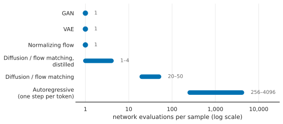
5.2 Fidelity and Coverage
A good generative model needs both fidelity and coverage, as introduced in Section 4. Figure 30 shows the two typical failures on a 2D toy dataset. A model with low fidelity covers all modes, but it also generates many samples between them, i.e. unrealistic samples. VAEs, for example, tend to cover all training data at the cost of sample quality (blurry images). A model with low coverage generates realistic samples, but only of a few modes of the data. This failure is called mode collapse and is a well-known problem of GANs. Likelihood-based models, in contrast, are encouraged by their objective to cover all training data. Diffusion models also tend to have good coverage.
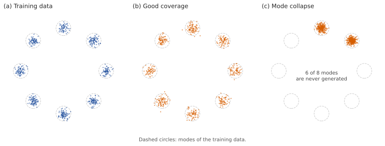
Notably, the two properties are often in tension: techniques that increase fidelity tend to reduce coverage. A prominent example is guidance in diffusion models (Ho and Salimans 2022): it concentrates the samples on the most typical regions of a class. In terms of Figure 30, a strong guidance moves a model from (c) towards (d): the samples become more realistic, but less diverse.
5.3 Latent-Space Structure and Controllability
For models with an explicit latent space, such as VAEs and GANs, the structure of this space determines how well outputs can be explored and edited. Ideally, the latent space is smooth: similar latent vectors produce similar outputs, and interpolating between two latent vectors yields a gradual transition between the outputs1 (see Figure 31). VAEs explicitly encourage this through their training objective, and GANs such as StyleGAN also exhibit smooth latent spaces (Karras et al. 2019).
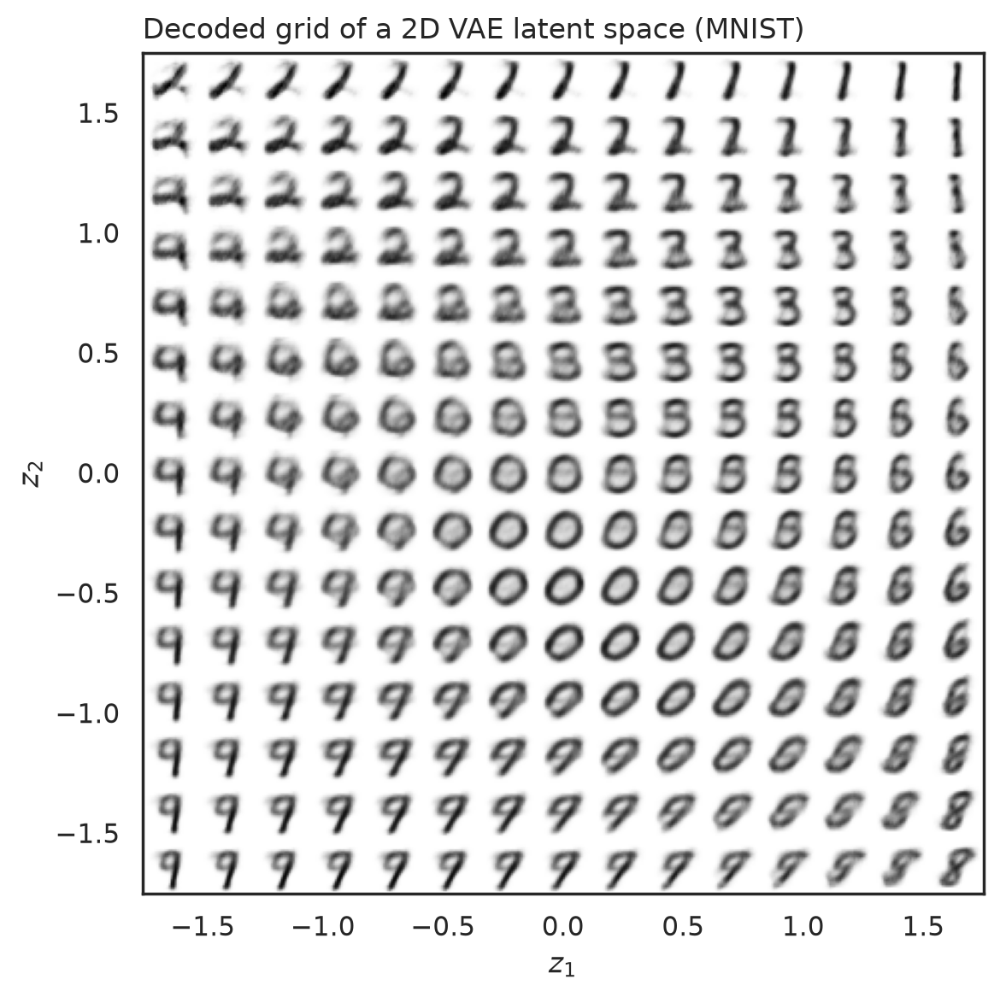
demos/genai/genai_intro_figures.ipynb), following the visualization in Kingma and Welling (2014). Neighboring latent vectors produce similar digits, and moving through the latent space gradually morphs one digit into another.
Beyond smoothness, a latent space can be disentangled: each dimension controls one independent factor of variation, such as pose or lighting. Figure 32 illustrates this with the cylinder dataset from Figure 22. It has been shown, however, that unsupervised disentanglement is fundamentally impossible without inductive biases in the model or the data (Locatello et al. 2019).
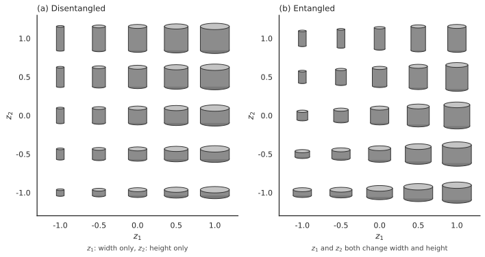
Disentanglement is attractive for interpretability, but it is not required for controllable generation. Modern models achieve control primarily through conditioning, i.e. through text prompts, reference images, masks, or structural inputs such as edge or depth maps (see Section 3), rather than by manipulating individual latent dimensions.
5.4 Likelihood Computation
Some models can evaluate \(p_{\theta}(\mathbf{x})\) for any given input \(\mathbf{x}\) (see Figure 33). This enables training by maximum likelihood, the detection of outliers, and the comparison of models on test data. Autoregressive models and normalizing flows compute the likelihood exactly, VAEs, diffusion and flow matching models provide a lower bound or a computationally expensive estimate, and GANs provide none. Note that a high likelihood does not imply high-quality samples (see Section 6.1).
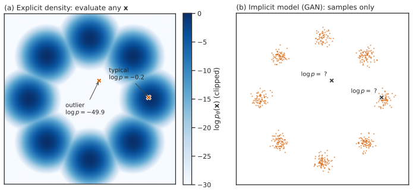
- A model with an explicit density assigns a log-likelihood to any input: the typical point has a high, the outlier a very low value. (b) An implicit model such as a GAN only generates samples; it cannot tell how likely a given input is.
6 Evaluating Generative Models
Evaluating generative models is difficult because there is usually no single correct output. For a given prompt, label, mask, or input image, many different outputs may be valid.
A useful evaluation question is therefore not simply:
Is the generated image correct?
but rather:
Are the generated images realistic and varied, do they follow the condition, and are they useful?
Different evaluation methods answer different parts of this question. Table 3 maps typical evaluation questions to suitable methods, which we discuss in the following.
| Evaluation question | Suitable methods |
|---|---|
| Do samples resemble real data? (fidelity) | precision, FID, KID, CMMD, human judgement |
| Does the model cover the variety of real data? (coverage) | recall, class or mode coverage, FID, KID, CMMD |
| Does the model assign a high density to real data? | test-set log-likelihood, if available |
| Does the output follow the prompt? | human judgement, CLIP-based alignment |
| Which model do people prefer? | blind pairwise comparison, preference leaderboards |
| Does an edit preserve the original content? | similarity of unchanged regions, human judgement |
| Are synthetic images useful for training? | downstream performance on real test data |
6.1 Likelihood
For models with an explicit density, the average log-likelihood of \(N\) held-out test images measures how well the model covers real data:
\[ \frac{1}{N} \sum_{i=1}^{N} \log p_{\theta}(\mathbf{x}^{(i)}) \]
Many models, such as GANs, do not provide it. Moreover, it has been shown that likelihood and sample quality are largely independent: a model can achieve a high likelihood while generating poor samples, and vice versa (Theis et al. 2016). Likelihood therefore does not tell us whether generated samples look good or follow a prompt.
6.2 Human Evaluation
A direct but expensive approach is to ask humans to compare generated images. Typical questions are:
- Which image looks more realistic?
- Which image better matches the prompt?
- Which image has fewer artifacts?
- Which image would you prefer to use?
Human studies are often the most meaningful evaluation for visual quality, but they are slow, subjective, and difficult to use during model development.
6.2.1 Human Preference Benchmarks
An increasingly popular form of human evaluation is blind pairwise comparison. Given the same text prompt, two models generate images that are shown side by side without revealing which model produced which. Human evaluators select the image they prefer. Aggregating many such judgements makes it possible to rank models with a statistical preference model, such as the Bradley–Terry model, often reported on an Elo-like scale. Examples of public leaderboards are the Arena text-to-image leaderboard and the Artificial Analysis image arena.
In contrast to distribution-level metrics such as FID, these benchmarks directly capture human preferences. However, preference is subjective: it can reflect aesthetic appeal rather than faithfulness, coverage, or usefulness for a downstream task.
If humans consistently prefer images from model A over model B, does this imply that model A is the better generative model? In which applications might this conclusion be misleading?
Click for possible answer
Not necessarily. Preference benchmarks rate individual, mostly creative images for a given prompt. They reward aesthetic appeal and prompt following, but they do not measure coverage: a model that always generates the same polished style can win many comparisons. The conclusion can be misleading wherever faithfulness matters more than appeal, for example in super-resolution, medical image translation, or synthetic training data, where a less pleasing but faithful or diverse output is more useful.
6.3 Distribution-Level Metrics
Many automatic metrics compare the distribution of generated images with the distribution of real images. Since distances between raw pixels say little about image content, the images are first mapped to feature vectors with a pretrained network.
6.3.1 Fréchet Inception Distance (FID)
The most widely used metric is the Fréchet Inception Distance (FID) (Heusel et al. 2018). It is computed in three steps (see Figure 34):
- Real and generated images are mapped to 2048-dimensional feature vectors with a pretrained Inception network.
- A Gaussian is fitted to each set of feature vectors: mean \(\mathbf{\mu}_r\) and covariance \(\mathbf{\Sigma}_r\) for the real, \(\mathbf{\mu}_g\) and \(\mathbf{\Sigma}_g\) for the generated images.
- The Fréchet distance between the two Gaussians is computed:
\[ \text{FID} = \underbrace{\lVert \mathbf{\mu}_r - \mathbf{\mu}_g \rVert^2}_{\text{mean term}} + \underbrace{\operatorname{tr}\big(\mathbf{\Sigma}_r + \mathbf{\Sigma}_g - 2 (\mathbf{\Sigma}_r \mathbf{\Sigma}_g)^{1/2}\big)}_{\text{covariance term}} \tag{4}\]
The mean term measures how far apart the centres of the two feature clouds are, the covariance term compares their spread and shape. FID is zero for identical Gaussians: the lower, the better.
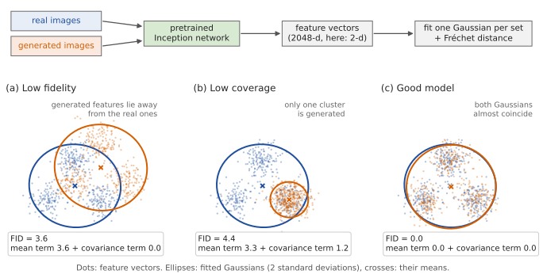
Figure 34 demonstrates that FID reacts to a lack of fidelity (a, shifted features) as well as to a lack of coverage (b, only one cluster is generated). Notably, both failures result in a similar FID: a single number does not reveal which of the two is the problem. Further limitations:
- it assumes that the features follow a Gaussian distribution (in Figure 34, three clusters are summarized by a single Gaussian)
- its value depends on the number of samples, so FIDs are only comparable for a fixed sample size (Bińkowski et al. 2021)
- the Inception features were trained on ImageNet and may be poorly suited to other domains, such as medical images, or to the rich content of modern text-to-image models (Jayasumana et al. 2024)
Kernel Inception Distance (KID) (Bińkowski et al. 2021) compares the same features without the Gaussian assumption, using a kernel-based distance (maximum mean discrepancy, MMD). It is unbiased and thus more reliable for small sample sizes. CMMD (Jayasumana et al. 2024) follows the same idea but replaces the Inception features with CLIP embeddings (Radford et al. 2021). Its authors show that it agrees better with human judgement of modern text-to-image models than FID.
Before FID, the Inception Score (IS) (Salimans et al. 2016) was the standard metric. The idea is that good generated images should be classified confidently by a pretrained Inception classifier, while the full set of generated images should cover many classes (see Figure 35).
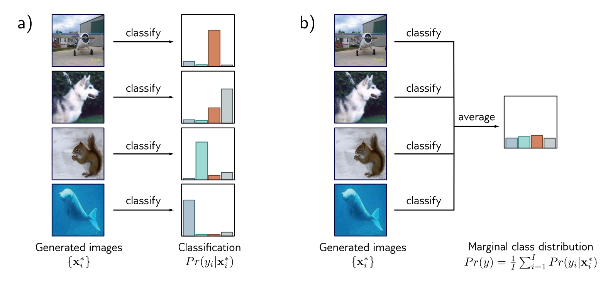
Its main limitations:
- it does not compare generated images to real images
- it is most meaningful for class-balanced datasets such as ImageNet
- it does not detect a lack of coverage within a class (e.g. always generating the same elephant)
6.3.2 Precision and Recall
To measure fidelity and coverage separately, Kynkäänniemi et al. (2019) define precision and recall for generative models. Both compare the real and the generated feature vectors. The region covered by each set (its manifold) is approximated by placing a ball around every feature vector, with a radius that reaches to its \(k\)-th nearest neighbour within the same set.
| Concept | Metric | Definition |
|---|---|---|
| fidelity | precision | fraction of generated samples that lie within the manifold of the real data |
| coverage | recall | fraction of real samples that lie within the manifold of the generated data |
The fidelity and coverage values in the demo of Section 4 are simple versions of these two metrics. In Figure 27, model (a) achieves a high precision but a low recall, while model (b) achieves a high recall but a lower precision. Likewise, the mode-collapsed model in Figure 34 (b) achieves a high precision but a low recall, which FID alone cannot distinguish from a lack of fidelity.
The following demo lets you compare FID, precision and recall directly. The real features (blue) are fixed; you change the generator and observe which metric reacts.
- Compare the presets Shifted and Mode collapse. Both have a high FID. How do precision and recall tell the two failures apart?
- Choose Too narrow. What happens to FID, and what to recall? Why?
- With Good model, reduce the number of samples to 50 and change the seed a few times. What happens to FID?
- Show the balls around the real points and choose Too broad. Which generated points count against precision?
Click for possible answers
- Shifted has a low precision: many generated points lie outside the real manifold (low fidelity). Mode collapse has a high precision but a low recall: every generated point is realistic, but two of three clusters are missing (low coverage).
- FID stays close to zero, but recall drops clearly. FID summarizes each set by a single Gaussian, which is dominated by the distances between the three clusters, so narrower clusters hardly change it. Precision and recall compare the sets locally and detect the missing variation.
- FID fluctuates and stays above zero, although the generator is perfect. FID is biased for small sample sizes, which is why FIDs are only comparable for a fixed number of samples.
- The hollow orange points: they lie outside all balls around real points, i.e. in regions without real data.
Like all distribution-level metrics, precision and recall summarize a whole set of images. A model can achieve good average scores while still failing on rare classes, spatial relations, text rendering, or fine-grained details.
6.4 Conditional and Task-Specific Evaluation
For conditional generation, realism alone is not enough: the output also has to follow the condition and serve its purpose.
Which of the tasks from Section 3 require the model to be creative, and which require the model to be faithful to a given input?
Click for possible answer
Unconditional image generation and text-to-image generation often emphasize creative variety, although they still need to produce plausible images.
Tasks such as inpainting, super-resolution, image translation, and image editing require the output to be faithful to the input. The model should generate new visual content, but it should also preserve important information from the condition, such as identity, geometry, anatomy, layout, or product appearance.
The evaluation should therefore match the intended use case (see Table 5).
| Task | What should be evaluated? | Possible methods |
|---|---|---|
| text-to-image | Does the image match the prompt? | CLIP-based scores, human judgement |
| image editing, inpainting | Was the requested change made plausibly, and is the rest preserved? | similarity of unchanged regions, human judgement |
| super-resolution | Are details realistic and faithful to the input? | perceptual quality, reconstruction metrics (e.g. PSNR, SSIM) |
| medical image translation | Is the target domain reached while preserving anatomy? | expert review, downstream diagnosis |
| reference-based generation | Is the identity of the product or person preserved? | preservation of identity and geometry |
| synthetic training data | Does it improve the downstream model? | performance on real validation/test data |
For text-to-image models, prompt alignment is often measured using vision-language models such as CLIP, for example with CLIPScore: the cosine similarity between the CLIP embeddings of the image and the prompt (Hessel et al. 2022). CLIP-based scores capture the overall semantic agreement well, but they are unreliable for compositional details: CLIP often behaves like a bag of words and is largely insensitive to word order, attribute binding (“a red cube and a blue sphere”) and relations between objects (Yuksekgonul et al. 2023).
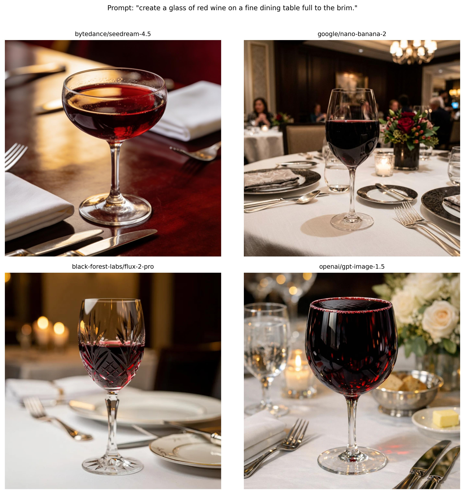
Task-specific evaluation is particularly important for scientific, medical, and industrial applications. A generated image can look realistic but still be scientifically or semantically wrong.
In super-resolution, the information lost by downsampling cannot be recovered. A generative model fills in details that are plausible given the low-resolution input, but not necessarily the details that were actually there. Notably, there is a fundamental trade-off: beyond a certain point, improving perceptual quality necessarily increases the deviation from the true image (distortion), and vice versa (Blau and Michaeli 2018).
For creative applications, plausible details are often all we need. For medical or scientific images, such as synthetic CT scans generated from MRI (Figure 8), hallucinated structures can be harmful. Here, faithfulness to the ground truth and validation by domain experts are essential.
In summary, there is no single best metric for generative models. A good evaluation starts from the evaluation question (Table 3) and combines several perspectives: distribution-level metrics for benchmarking, precision and recall to separate fidelity from coverage, and task-specific checks of whether the output is faithful to the condition.
7 References
Footnotes
Smoothness also depends on how one interpolates. For Gaussian latent variables, spherical interpolation is often preferred over linear interpolation (White 2016).↩︎